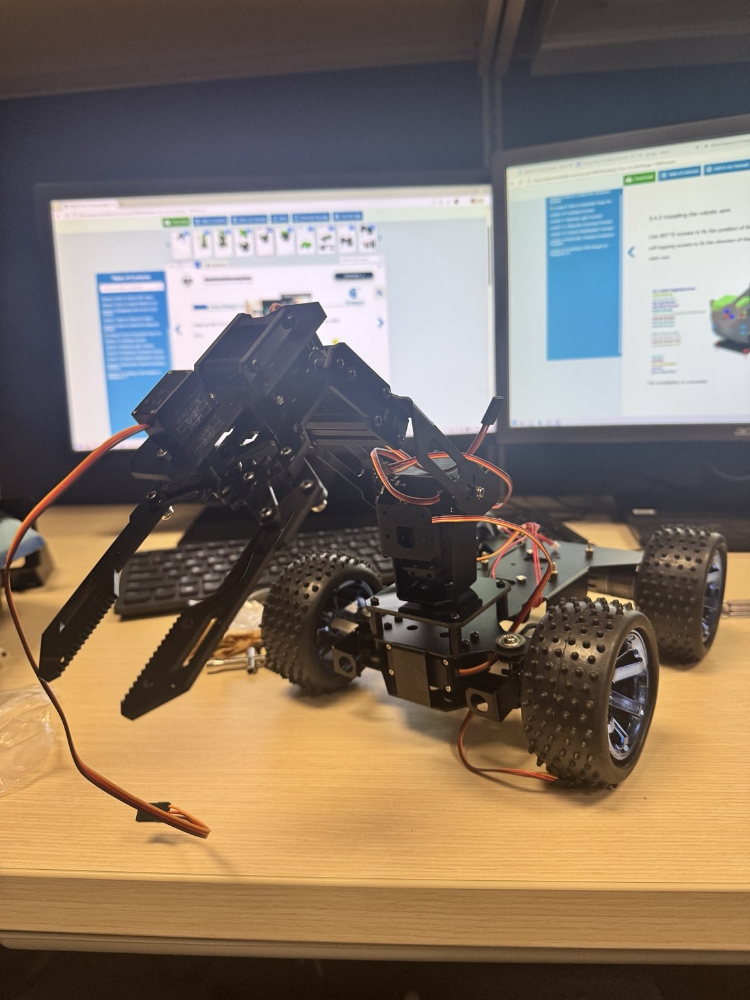
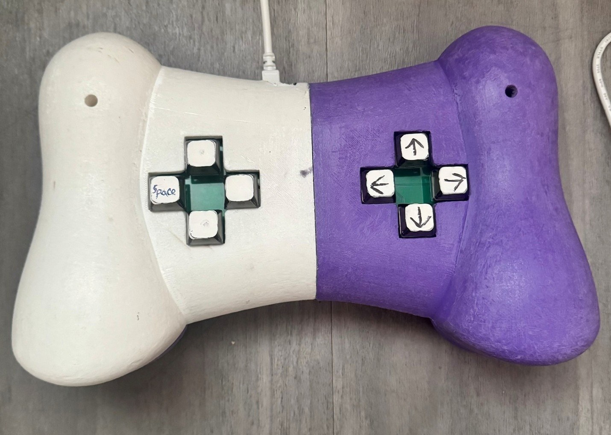
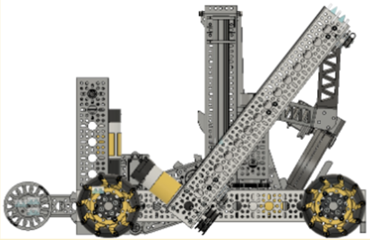
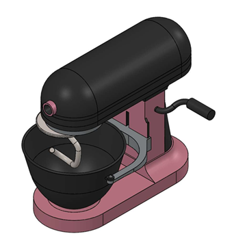
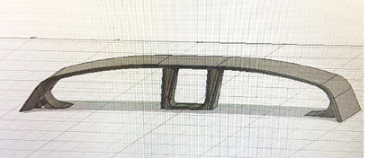

Selected Work
01 / PROJECTSA collection of projects showing how I approach mechanical design, fabrication, robotics, and engineering documentation—from early concepts through testing and iteration.





About
02 / CONTEXTI’m a mechanical engineering student at Kansas State University interested in the intersection of design, manufacturing, and robotics. I enjoy working through the entire engineering process—from developing a concept and modeling it in CAD to figuring out how to actually manufacture, assemble, test, and improve it.
I’m intentionally looking for opportunities that force me to learn new tools, work with unfamiliar systems, and take on problems I haven’t solved before. My goal is to graduate with as broad a technical foundation as possible, built through both coursework and hands-on experience.
View Resume